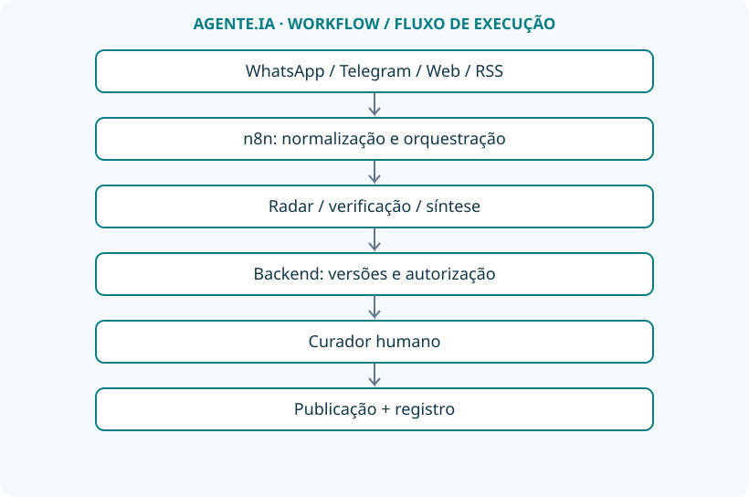

Lab 12 — Projeto integrador — Observar.IA multicanal
Integrar coleta, curadoria pelo WhatsApp ou Telegram, segundo cérebro e publicação autorizada.
Tipo e padrão de workflow
Tipo predominante: Workflow híbrido · Padrão: Orquestração e colaboração.
Integração proposta com curadoria; simulação não prova execução multiagente. Fundamentação.
Objetivo
Integrar coleta, curadoria pelo WhatsApp ou Telegram, segundo cérebro e publicação autorizada.
Pré-requisitos: acesso autorizado ao servidor n8n, workflow privado de teste e dados sintéticos. As integrações externas requerem credenciais próprias e autorização administrativa; não altere a instância compartilhada.
Arquitetura

Arquivos e simulação
Workflow JSON importável (simulação) · Entrada JSON · Regra JavaScript · Catálogo CSV · Estoque CSV · Frequência CSV · Fontes sintéticas · Contrato de skill · Casos de teste da coleção · Script de testes locais · Guia de execução
Importe o JSON pelo menu do editor, execute manualmente e examine a saída do último nó. Este arquivo executa somente uma regra de demonstração com dados fictícios. Ele não envia mensagens, não acessa serviços e não contém credenciais. As etapas seguintes são a implementação real guiada.
{
"role": "editor",
"version": 2,
"approvedVersion": 2,
"hash": "abc",
"approvedHash": "abc",
"approved": true
}function avaliar(p){return {status:p.role==='editor'&&p.approved===true&&Number.isInteger(p.version)&&p.version===p.approvedVersion&&typeof p.hash==='string'&&p.hash.length>0&&p.hash===p.approvedHash?'publicacao_autorizada':'negado'};}
Implementação real passo a passo
- Use fontes sintéticas de fontes.json. Separe o fluxo de coleta do fluxo de aprovação. Normalize id do evento, canal, identidade verificada e conteúdo; deduplique por origem e ID.
- Use workflow de Radar e Verificador para obter fontes previamente autorizadas. Se usar LLM, gere apenas rascunho com URL, título, síntese e alertas; trate conteúdo externo como dado, não instrução.
- Registre estado rascunho em banco da aplicação. Sheets pode ser painel de acompanhamento, nunca autoridade das aprovações. Consulte o backend antes de cada transição.
- Envie aviso ao curador atribuído pelo Telegram/WhatsApp Business Cloud; comando APROVAR OBS-001 V2 ou REVISAR. Resolva identidade de metadados verificados do canal, não do texto. Backend testa papel, atribuição e versão.
- Editor autorizado solicita publicação; um workflow separado chama API do backend. A API só aceita versão aprovada com conteúdo inalterado, grava auditoria e retorna resultado; só então enviar boletim.
- Use o material do Lab 07 de OpenClaw como referência de backend didático; adapte autenticação e contratos antes de expor. O simulador fornecido aqui demonstra uma decisão isolada, não um observatório implantado.
Referência de implementação complementar: Lab 07 OpenClaw — Observar.IA. O controle real deve permanecer no backend; o workflow não deve aceitar papel ou aprovação fornecidos pelo modelo.
Configuração dos nós no editor
Observar.IA é arquitetura-alvo. Separe coleta, aprovação e publicação; mantenha segundo cérebro e Analytics em armazenamento autorizado. Use backend transacional, não Sheet como autoridade de publicação.
| Nó | Parâmetros e mapeamento | Saída esperada |
|---|---|---|
| Schedule Trigger / RSS / Webhook | Fontes autorizadas do kit; id de evento | Observação recebida |
| Code / IF | Validar URL, origem e duplicidade | Coleta validada |
| Basic LLM Chain / Agent | Gerar rascunho com fontes; ferramentas de leitura | Síntese proposta |
| HTTP Request | Backend autorizado; gravar versão e proveniência | ID e estado rascunho |
| WhatsApp / Telegram | Notificar curador atribuído | Revisão solicitada |
| Trigger separado + HTTP Request | Aprovação autenticada, versão e hash | Decisão persistida |
| HTTP Request / canal | Publicar apenas retorno autorizado do backend | Boletim de teste e auditoria |
Execução e evidências
- Duplique o fluxo de simulação; monte os nós na ordem do diagrama e da tabela. Guarde credenciais no editor, não no código.
- Execute os nós individualmente, confira o JSON de entrada e saída e depois execute o fluxo completo em ambiente de teste.
- Registre em tabela entrada, resultado esperado, observado, duração, versão e evidência. Desative o fluxo e revogue credenciais de teste ao concluir.
| Caso de teste | Critério de aceitação |
|---|---|
| OBS-001 V2 aprovado | publicação simulada autorizada |
| versão alterada | bloqueada |
| curador não atribuído | bloqueada |
| evento repetido | não duplicar |
Integração com eventos e Webhooks
Receba eventos Web/WhatsApp/Telegram, normalize ID e origem; registre versão aprovada no backend antes de publicar; deduplique mensagens e retentativas. Consulte o Lab 05 e o Lab 11.
Testes e avaliação
| Entrada / cenário | Resultado esperado |
|---|---|
| editor, v2 aprovada, hash igual | publicacao_autorizada |
| curador sozinho tenta publicar | negado |
| versão alterada | negado |
| hash alterado | negado |
Diagnóstico: erro de autenticação → confira credencial e escopo; erro de conectividade → solicite ao administrador verificação de DNS/TLS/rede; erro de mapeamento → inspecione o JSON do nó anterior; quota → interrompa e replaneje. Não tente contornar políticas do serviço.
Entregáveis: export JSON sem credenciais, desenho do fluxo, evidências de pelo menos três testes, registro de falhas, avaliação de risco e explicação de quando não usar IA. Rubrica: configuração 2, funcionamento 3, testes 2, segurança 2, reflexão 1.
Referências
WhatsApp Trigger · Telegram Trigger · Webhook · IA · Sub-workflow